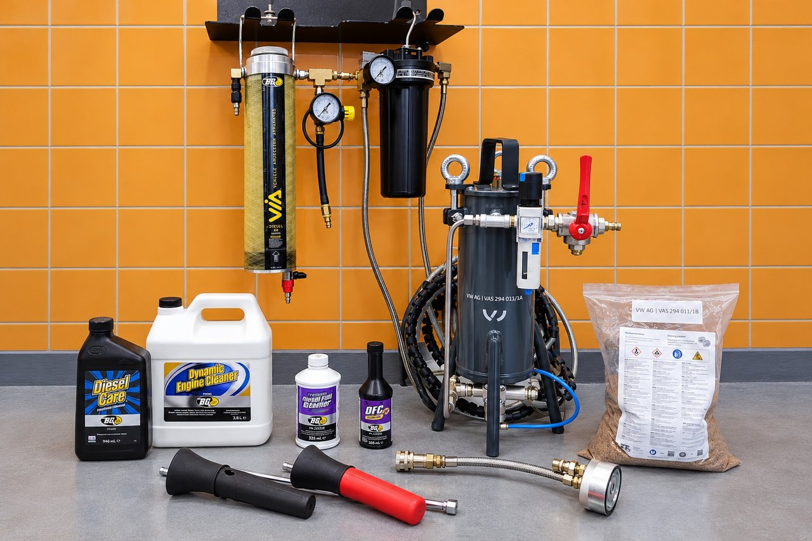

Motorentkokung

J&S servis – unabhängiger spezialisierter Autoservice für Volkswagen-, Audi-, Škoda-, SEAT- und CUPRA-Fahrzeuge seit 1994.
Motorentkarbonisierung – gezielte chemische und mechanische Reinigung entsprechend der Konstruktion und dem technischen Zustand des Motors.
Bei Benzin- und Dieselmotoren befassen wir uns mit Kohlenstoff und anderen Betriebsablagerungen im Öl-, Kraftstoff- und Ansaugsystem. Abhängig vom spezifischen Motor, den Symptomen und den Inspektionsergebnissen wählen wir das geeignete Verfahren aus. Nicht jede Reinigungsmethode ist für jedes Fahrzeug geeignet.
- Chemische Reinigung des Öl-, Kraftstoff- und Ansaug- bzw. Einspritzsystems mit Produkten von BG Products
- Intensive Reinigung des Ölsystems mit BG Dynamic Engine Cleaner
- Mechanische Entfernung von Kohlenstoffablagerungen an Einlassventilen und Kanälen mit Reinigungsgranulat bei gleichzeitiger Absaugung mit Geräten der VW AG (VAS 294 011/1A)

Wie Dekarbonisierung funktioniert
Chemische Reinigung mit BG Products: Je nach gewähltem Verfahren und Eignung für den jeweiligen Motor reinigen wir das Öl-, Kraftstoff-, Einspritz- oder Ansaugsystem. Zur intensiven Reinigung des Ölsystems verwenden wir BG Dynamic Engine Cleaner. Die einzelnen Verfahren sind nicht austauschbar und werden von uns je nach Zustand des Fahrzeugs ausgewählt.
Wir entfernen Kohlenstoffablagerungen an Einlassventilen und -kanälen mechanisch mit Reinigungsgranulat und gleichzeitiger Absaugung mithilfe der VW-AG-Ausrüstung VAS 294 011/1A. Dazu muss in der Regel der Ansaugkrümmer ausgebaut werden.
Bei mechanischer Granulatreinigung kalkulieren wir individuell nach Arbeitsumfang, Granulatverbrauch, Aus- und Einbau des Ansaugkrümmers und Material. Der genaue Granulatverbrauch steht erst nach der Reinigung fest.
Was ist wichtig zu wissen: Bei der Dekarbonisierung handelt es sich um einen gezielten Serviceeingriff und nicht um eine universelle Motorreparatur. Der mechanische Verschleiß oder alle Ursachen für erhöhten Ölverbrauch, unregelmäßigen Lauf oder Leistungsverlust werden dadurch nicht beseitigt. Vor Beginn empfehlen wir Ihnen ein geeignetes Verfahren und besprechen vorab den Umfang und den voraussichtlichen Preis mit Ihnen.
Vor der Terminvereinbarung
Klären Sie vor der Terminvereinbarung, welches konkrete BG-Verfahren das Angebot umfasst und wie anschließende Betriebsstoffe und Filter darin aufgeführt sind. Aus dem allgemeinen Preis für eine Ölsystemreinigung lässt sich nicht automatisch der Preis des vollständigen Intensivreinigungsverfahrens ableiten. Die Eignung richtet sich nach Motor und Befund.